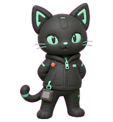
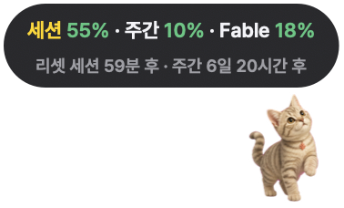

Meet Claude Pet, your token-watching desk buddy
A tiny desktop companion that floats on your screen and quietly watches your Claude token usage — so you don't have to.

Small, alive, never in the way
Rendered natively on macOS — no window frame, no background, no ghosting.
Idle & breathe
It sits quietly on your screen, breathing and blinking once every 25 seconds. Never demands attention.
Waves hello
Move your mouse close and it waves back, with a 30-second cooldown.
Grab & drag
Drag it anywhere and it runs along. Double-click to jump and force-refresh your usage instantly.
Spike alerts
When token usage spikes, it pulses a warning color and panics — session, model, or weekly.
Reset celebration
The instant your session resets, it jumps for joy.
Auto-updates
Right-click → Install new version. Downloads, replaces, and relaunches — done.
Three gauges, always in view
Session (5h), weekly total, and weekly per-model — each with %, remaining tokens, and a reset countdown.
See it in action

Floats over your desktop — no window frame, no background, no ghosting.
Get started in under a minute
Everything is bundled inside a notarized app, so it opens without any Gatekeeper warning.
Download ClaudePet.zip
Grab the latest build from the GitHub Releases page.
Move it to Applications
Unzip, drag ClaudePet.app into Applications, then double-click to launch.
That's it
Works on macOS 12+ on Apple Silicon and Intel (universal build). No setup — the app checks GitHub for updates on launch.
~/.claude usage logs and the OAuth token in your Keychain — it never touches Photos, Downloads, or Documents.
Calibrated to your real limits
Token limits are private to Anthropic, so the app can't know them outright. Type the % shown in Claude's Settings → Usage, and it back-solves the rest: limit = current usage ÷ %.
Frequently asked questions
Is Claude Pet free?
Yes. Claude Pet is completely free and open source. You can download the notarized app from GitHub Releases or build it yourself from the source code.
Which platforms does Claude Pet support?
Claude Pet runs on macOS 12 or later, on Apple Silicon and Intel Macs (Intel via the universal build). It is rendered natively with AppKit, so there is no window frame, no background, and no ghosting.
How does Claude Pet track my Claude token usage?
It reads only the local ~/.claude usage logs and the Claude OAuth token in your macOS Keychain. It never touches Photos, Downloads, or Documents, and your usage data stays on your Mac. Because exact token limits are private to Anthropic, you calibrate once by typing the percentage shown in Claude's Settings → Usage, and the app back-solves your limit.
Is Claude Pet affiliated with Anthropic?
No. Claude Pet is an independent project by Yeongyu Yang (uygnoey). Claude is a trademark of Anthropic PBC, and Claude Pet is not affiliated with, endorsed by, or otherwise related to Anthropic.
Does Claude Pet include web or desktop chat usage?
No. The data comes from Claude Code's local logs only, so web and desktop chat usage is not included. Recalibrating occasionally keeps the gauges accurate.
The limits, no spin
- Data comes from Claude Code's local logs only — web/desktop chat usage isn't included, so recalibrate occasionally to stay accurate.
- Admin API cost belongs to your Console organization and is separate from your subscription limit.
- The Admin API key is stored in plaintext in ~/.claude_pet.json — use it on a personal machine only.